星辰智能办公室 · 07:00
闹钟响了。
我从行军床上坐起来——又在公司过夜了。桌上是昨晚没吃完的外卖，手机屏幕亮着：28条未读消息。
创业第三年，我已经分不清哪天是工作日哪天是休息日了。
翻了翻手机。产品DAU——嗯，正常。今天应该是平静的一天。
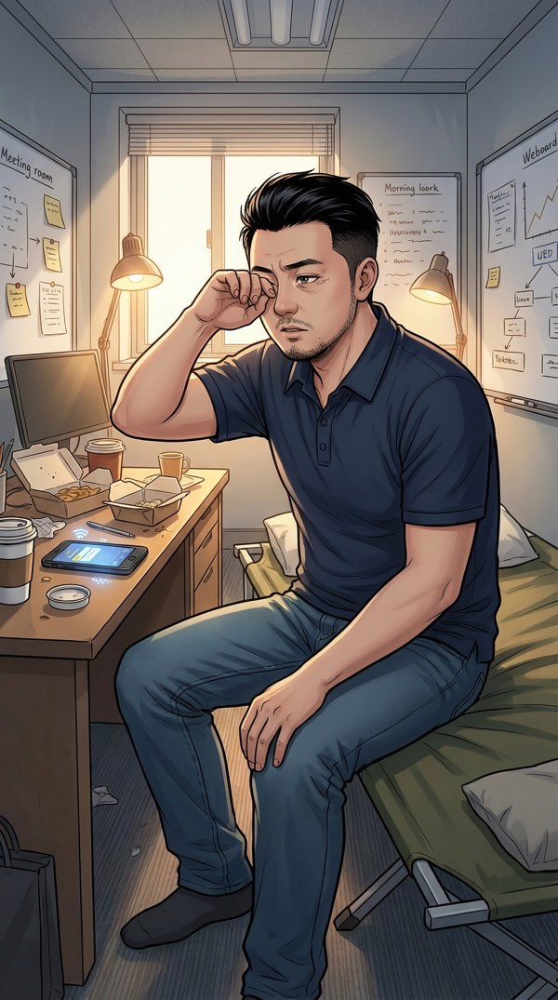
闹钟响了。
我从行军床上坐起来——又在公司过夜了。桌上是昨晚没吃完的外卖，手机屏幕亮着：28条未读消息。
创业第三年，我已经分不清哪天是工作日哪天是休息日了。
翻了翻手机。产品DAU——嗯，正常。今天应该是平静的一天。
3000万。我们账上只够发两个月工资。如果这笔钱收回去……
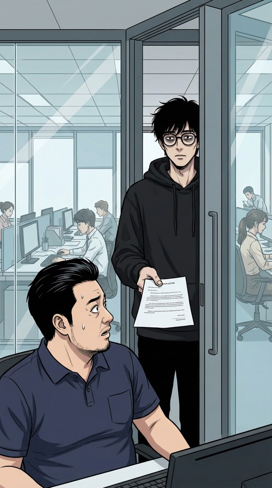
他说得对。上周那个方案我确实没认真看就否了——因为当时在焦头烂额处理融资的事。
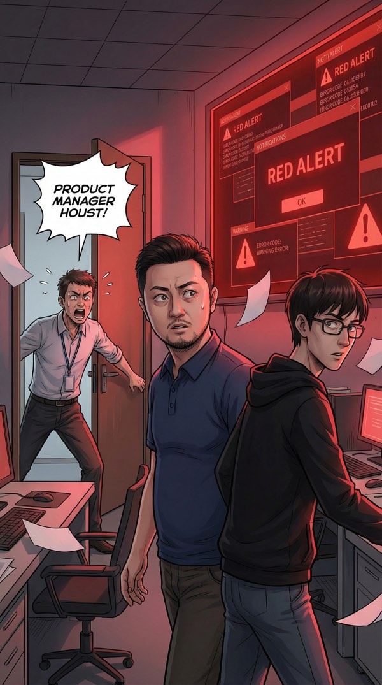
我站了起来。张磊也站了起来——但他犹豫了一秒，转身走向门口。
三件事。同一天。投资撤了，团队散了，产品崩了。
这不是巧合——
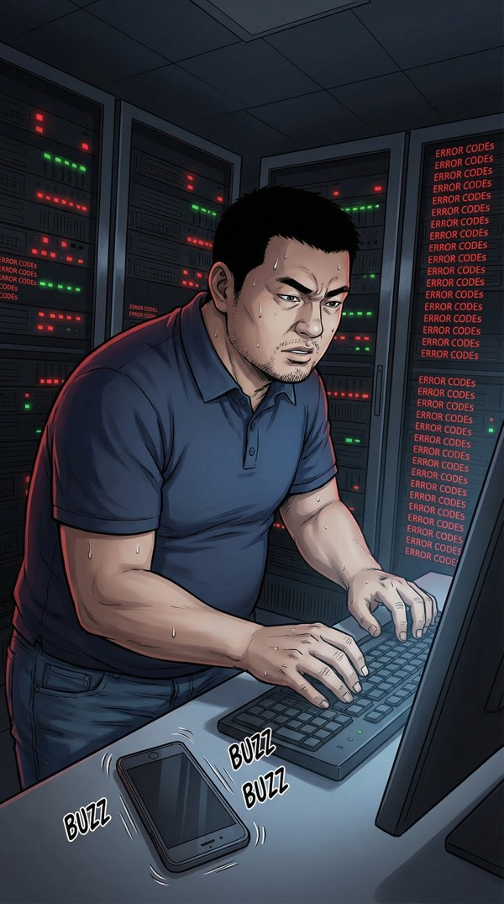
剩下的一天，我一个人在机房对着终端敲命令。我不是专业运维——操作笨拙，汗水滴在键盘上。手机不停地响——大客户在打电话质问。
屏幕上的红色错误码像墓碑一样不断刷新。
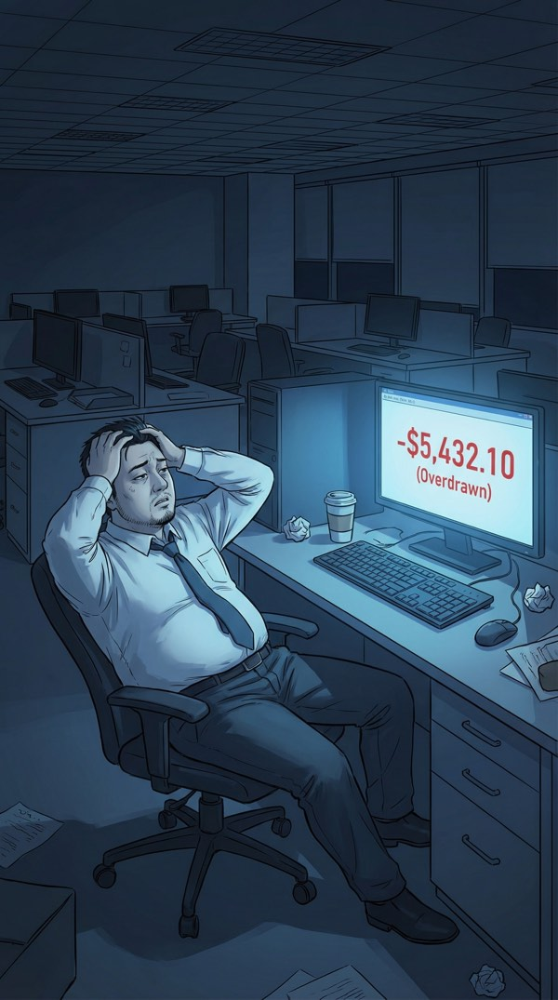
空荡荡的办公室。灯关了大半，只有我工位的屏幕还亮着。
屏幕上：银行账户余额——负数。大客户合同终止邮件。张磊的朋友圈——"新的开始"，配图是竞对公司的logo。
今天早上7点的时候，我还以为这只是普通的一天。
十七个小时后，我的公司死了。
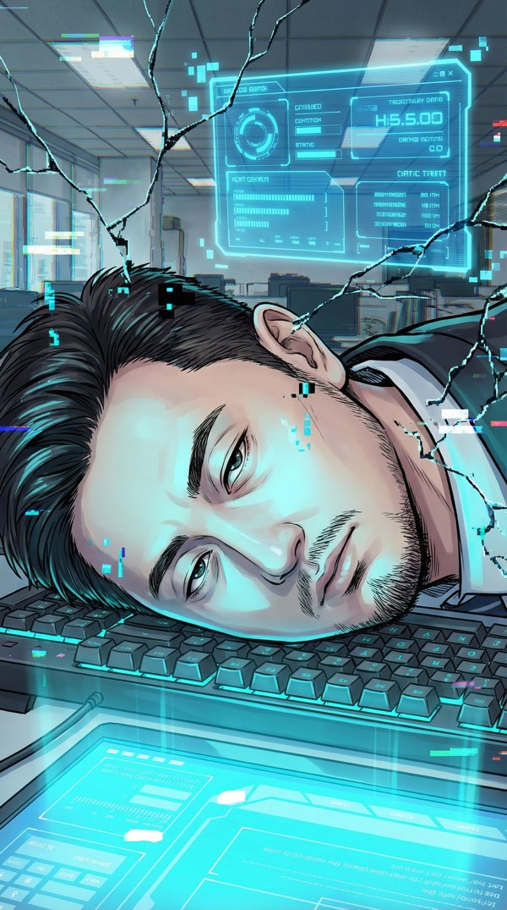
我趴在办公桌上。意识模糊。
然后——整个世界开始碎裂。像屏幕坏了一样，现实出现了数字化的裂纹。一个蓝色全息面板凭空出现。
检测到：创业者生命体征……
判定：公司死亡 = 创业者死亡
启动协议：时间循环
目标：在24小时内同时解决以下三项致命威胁——
① 💰 资金链断裂（撤资）
② 👥 核心团队流失（CTO离职）
③ 🖥️ 产品安全事故（DDoS攻击）
循环次数：1/???
解锁能力：加载中……
⚠️ 注意：三个危机存在隐藏关联
⚠️ 发现关联 = 发现解法
我在做梦？
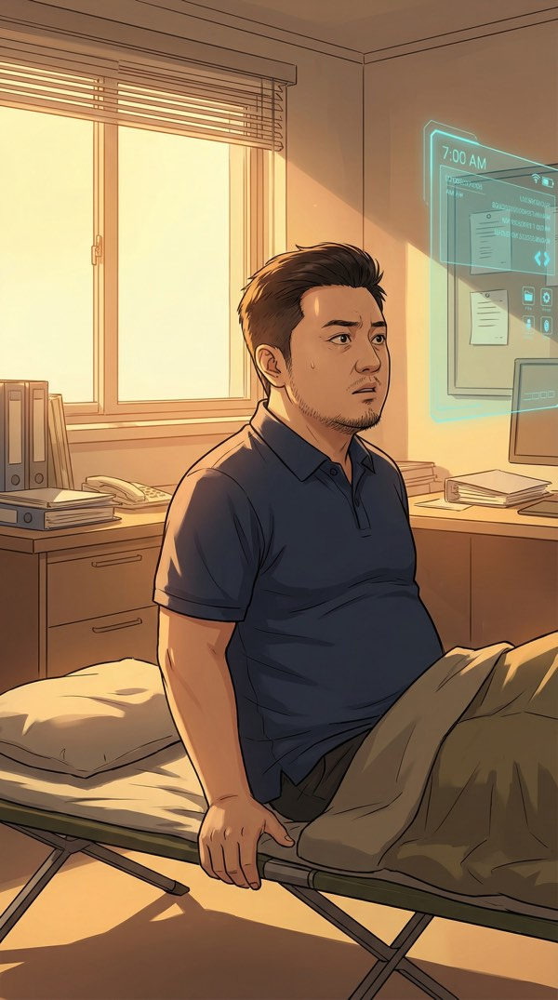
闹钟响了。7:00。
同一个行军床。同一个外卖盒。手机：28条未读。
一切一模一样——除了右眼角余光里，有一个淡蓝色的全息面板悬浮在空气中。
今日三大待办：
① 💰 09:00 王总来电（-24h）
② 👥 10:30 张磊辞职（-4人）
③ 🖥️ 11:00 DDoS攻击（-客户）
本轮解锁能力：
🧠「读心术」
可听到10米内任何人的真实想法
（持续至23:59）
⚠️ 上一轮生存时间：16h59m
⚠️ 本轮目标：活过23:59
……这不是梦。我确实回到了今天早上。
读心术？如果我能听到王总的真实想法……
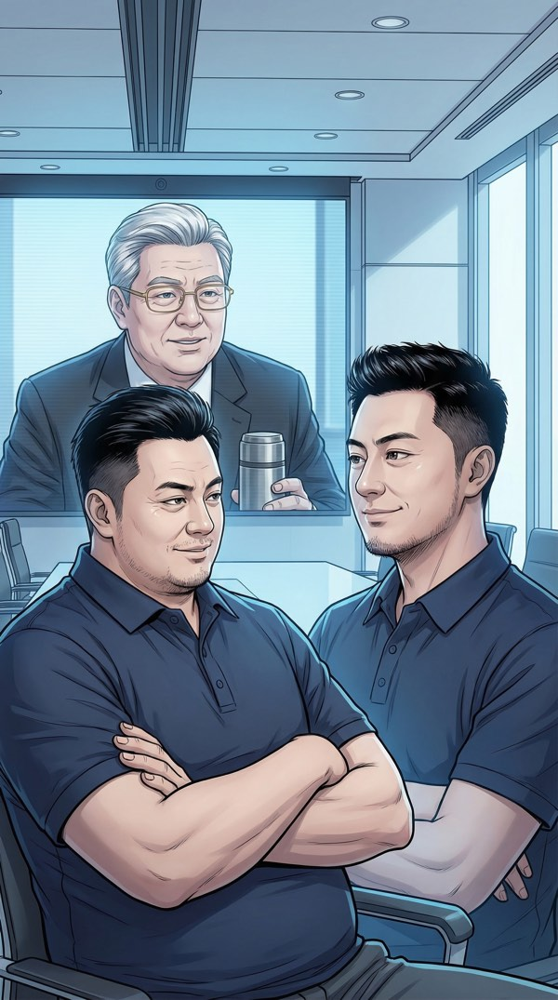
这次我提前到了会议室。面对大屏幕，等待视频接通。
我有读心术。这一局，我准备好了。
王总的脸出现在屏幕上。
我的眼睛亮了。
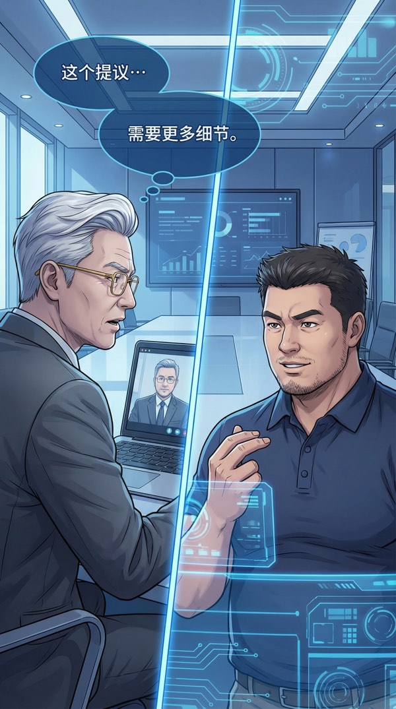
我根据心声实时调整话术。效果——一开始很好。
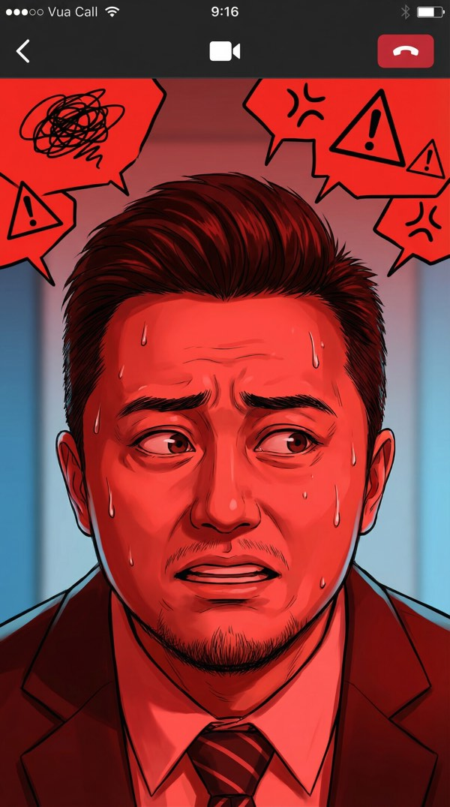
但我太贪心了。
读心术听到了不该听的——
我嘴角僵住了。
⚠️ 信任度正在下降
建议：停止过度精准回应。人类对"被完全理解"的反应是恐惧而非感激。
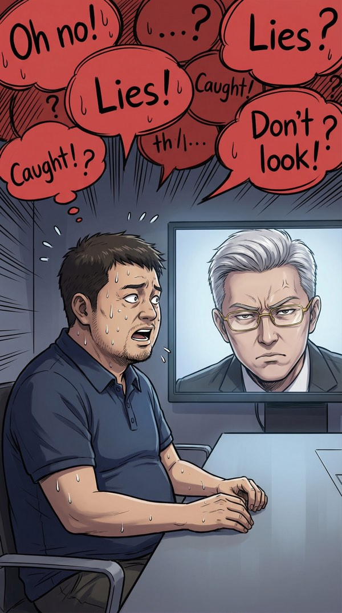
我越想挽回越糟糕。因为读心术让我听到了信任度下降的实时反馈。
💰 危机①：解决失败
原因：读心术使用过度，触发"恐怖谷效应"
知道对方在想什么……并不意味着能解决问题。该死。
读心术仍在生效。10:30张磊会来辞职。
你要怎么用读心术？
张磊进来。我只在他说出辞职理由时短暂开启了读心术。
🧠 读心术开启：2秒
🧠 读心术关闭
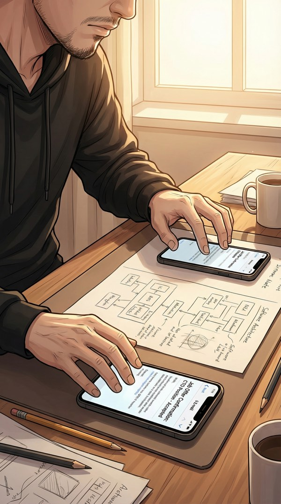
但这次循环的张磊已经签了竞对offer。道歉来得太晚了。
该死。第一次循环里我什么都不知道。第二次循环里我知道了——但知道和改变之间有多远？
20万违约金。物理锁链。
👥 危机②：解决失败
原因：信息获取时机正确，但干预时间窗口已关闭。
建议：下次循环提前至08:30干预。
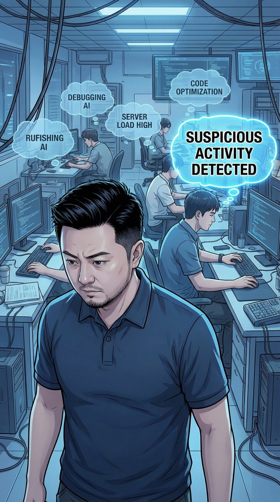
DDoS攻击来了。这次我用读心术"审问"了IT团队——从他们的心声中找到了一条线索。
我抓住了这条线索。
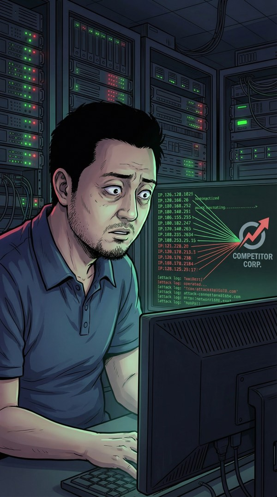
攻击源IP——确认来自竞对公司。
但服务器已经撑不住了。没有运维能力修复——张磊和技术团队已经离开。
23:59，循环重置。
生存时间：16h59m（+0m）
本轮收获：
✅ 发现：王总不想撤资（LP施压）
✅ 发现：张磊核心诉求是尊重
✅ 发现：DDoS来自竞对公司
✅ 发现：三个危机关联到同一源头
❌ 读心术评估：工具有效但使用方式错误
过度使用引发信任危机（王总）
使用正确但时间窗口已过（张磊）
结论：你已经掌握了所有信息
但信息 ≠ 解法
进入 LOOP 3……新能力加载中……
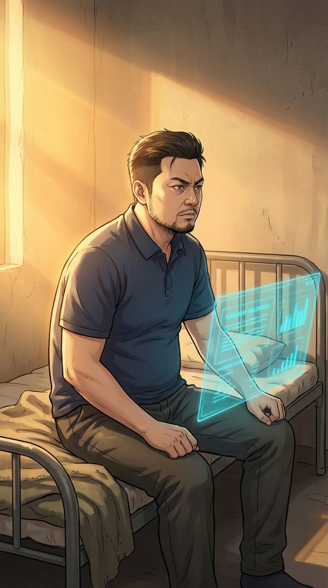
闹钟。7:00。行军床。28条未读。
本轮解锁能力：
⏸️「时间暂停」
可暂停周围时间5分钟（仅限使用一次）
累计信息库：
✅ 王总真实意图（想帮但需理由）
✅ 张磊核心诉求（尊重+方案）
✅ DDoS源头（竞对公司）
✅ 三危机关联性（同一源头）
⚠️ Loop 2教训：信息不是解法。时机才是。
时间暂停……只有一次。5分钟。我必须用在最关键的时刻。
而且这次我要在08:30之前截住张磊——在他签offer之前。
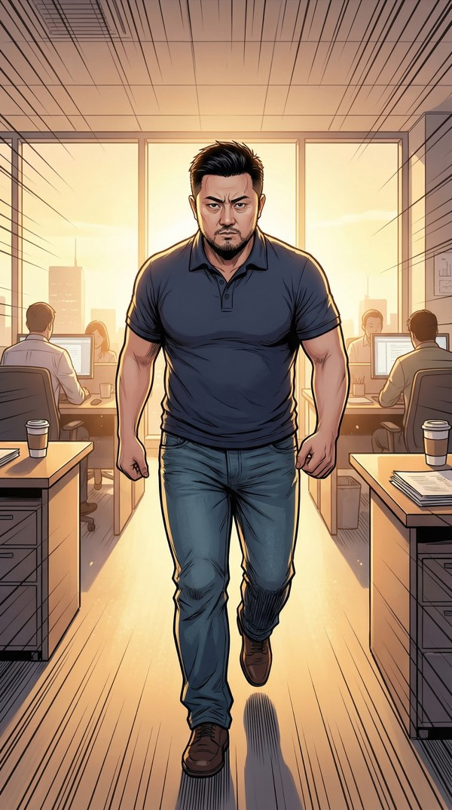
我没有等9:00的电话。
我主动出击了。
Loop 1我被动挨打。Loop 2我有了信息但没有行动力。
这次——我有信息、有时机、还有一张王牌。5分钟时间暂停。
但首先，我需要承认自己的错误。不用超能力，用真诚。
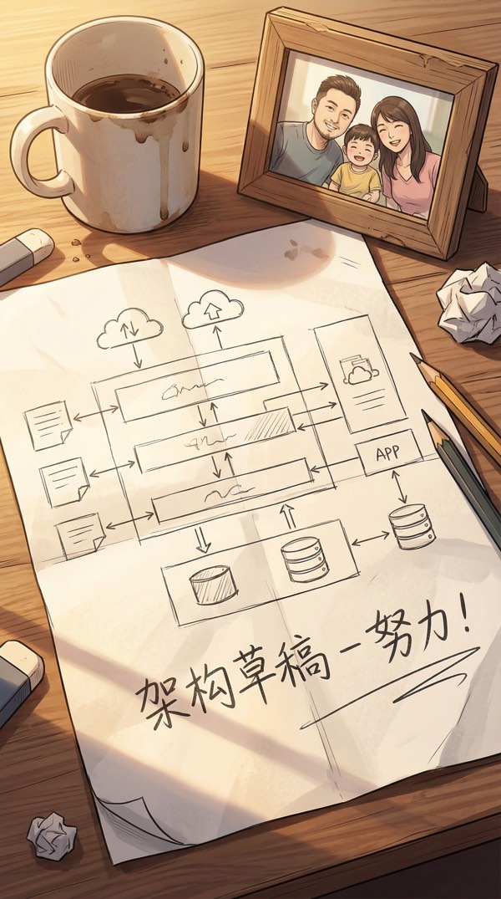
我在张磊的工位留了一张纸条——上面是他那个被我否决的技术方案核心架构图。我凭记忆画的。
字很丑，但画得很认真。架构图潦草但结构清晰——说明我真的理解了。
纸条最后一行：
"性能提升37%。我验证过了。
——你的方案是对的。对不起。
在你签任何东西之前，给我20分钟。"
如果读心术教会了我什么，是真话的力量不在于精准，在于真诚。
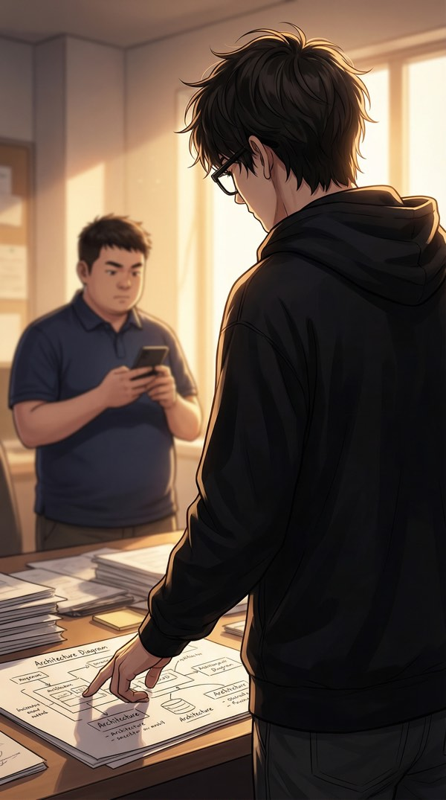
张磊到了。看到了纸条。
他站在工位前，盯着那张纸看了很久。手指触碰着架构图上的线条。
张磊停留时间已超过3分钟。
分析：情感波动中。决策窗口正在打开。
张磊看了纸条但没有来找你。
他08:45要和竞对签正式合同。距离签约还有30分钟。
时间暂停（5分钟）还没用。
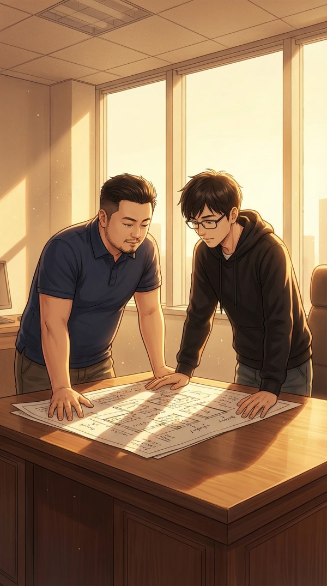
我走过去。没有套路。
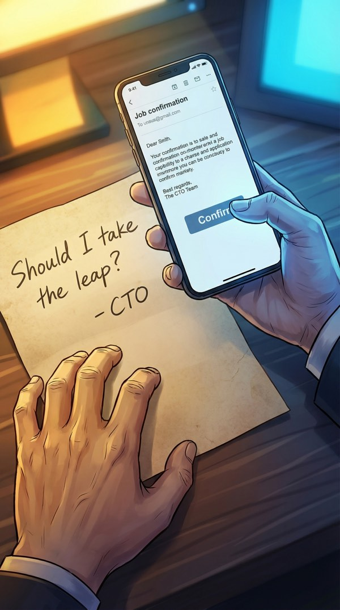
张磊震惊地转头看我。
信任度……正在恢复。
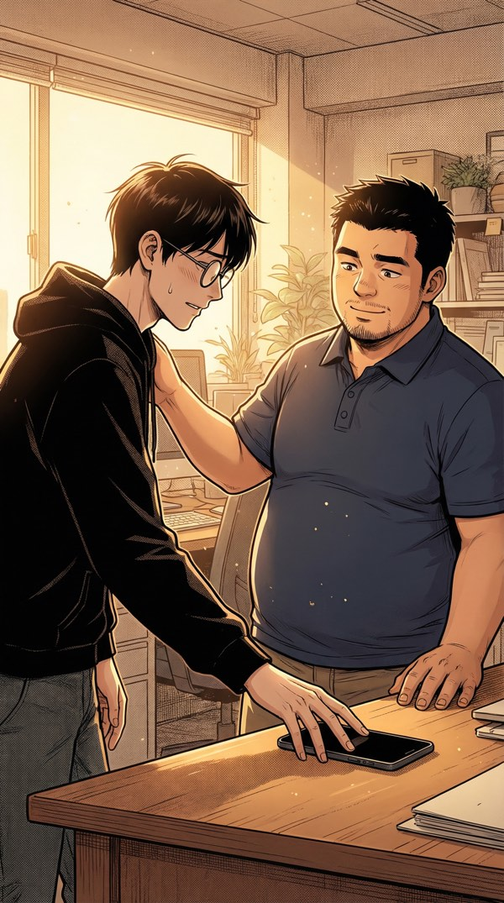
张磊没有点"确认"。
他关掉了手机。扣在桌上。屏幕朝下。
我轻轻拍了拍他的肩。没有更多言语。
张磊：留下（暂定）
老陈、小刘、阿伟：待定
⚠️ 张磊留下 ≠ 团队完全稳定
但核心节点已锁定
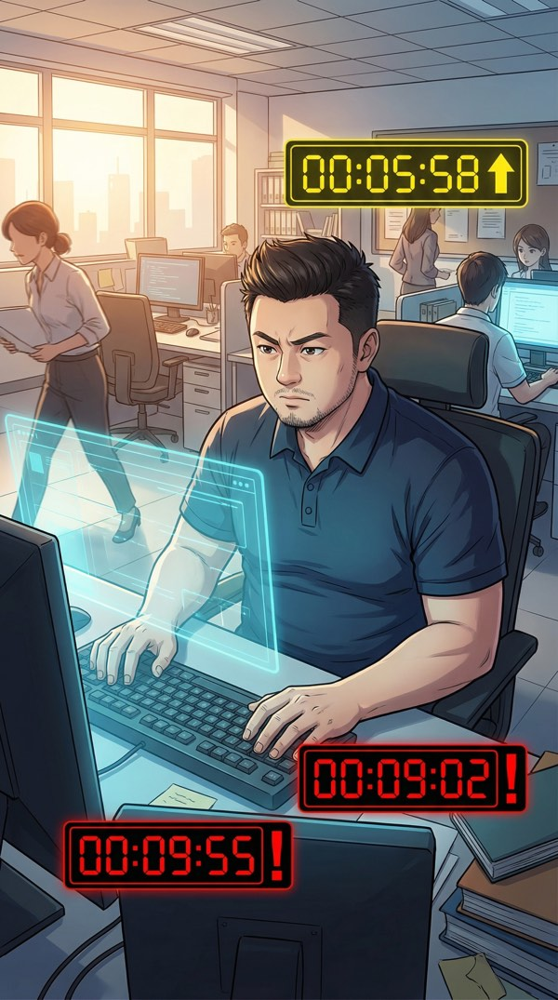
距离王总来电还有5分钟。
我现在有了新武器——张磊和他的技术方案。
王总需要一个LP无法反驳的理由。93%续约率不够——那是过去的数据。他需要的是未来的数据。
张磊的技术方案如果做成demo——那就是产品的未来。但demo需要时间……而时间暂停还没用。
⚠️ 提醒：时间暂停（5分钟）仍然可用。
不。还不是用的时候。真正的关键节点还没有到。
三个危机有同一个源头——竞对公司。我还没有触及到根源。
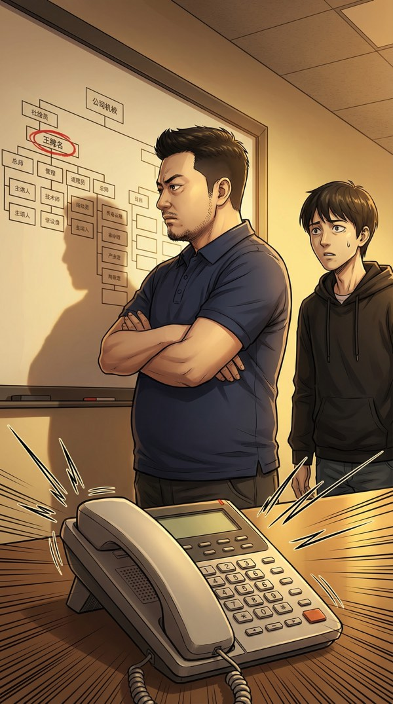
手机响了。王总来电。
但这一次，我没有接。
张磊困惑地看着我。ChronoOS在眼前闪烁警告——"未接来电将加速资金危机倒计时"。
但我的眼神不在手机上。不在ChronoOS上。
我盯着办公室墙上的公司架构图——上面有一个名字被我用记号笔圈了出来。
两次循环，我都在灭火。
王总来电——救火。张磊辞职——救火。DDoS——救火。
但火是谁放的？
LP施压。CTO被挖。服务器被攻击。
三条线指向同一个方向——竞对公司。
不。不只是竞对公司。
竞对怎么知道张磊的方案被否决？
竞对怎么知道王总的LP在动摇？
竞对怎么精确地在今天发动DDoS？
因为有内鬼。
而我刚刚在公司架构图上，圈出了那个名字。
三条危机 → 一个源头
源头不在公司外部
源头在——
[权限不足：需要Lv4]
[当前：Lv2]
[提升方式：完成Loop 3]
第一次循环，我什么都没做对。
第二次循环，我知道了所有人的想法，但更无力了。
第三次循环，我放弃了读心术，用了一张纸条和一句道歉。
这反而有用。
但真正的敌人不在对面公司的大楼里。
在我自己的办公室里。
第二章：我在时间暂停里看到了内鬼的真面目
—— TO BE CONTINUED ——